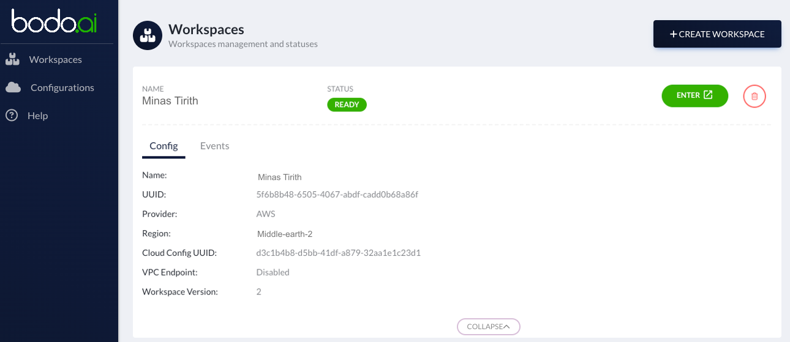

Using Bodo Cloud Platform¶
Bodo Cloud Platform Concepts¶
This page describes the fundamental concepts that will help you better understand how to use the Bodo Cloud Platform.
Organizations¶
Organizations on the Bodo Cloud Platform are tenants for billing and cloud resource management purposes. An organization can have multiple workspaces and cloud configurations, and users can be part of multiple organizations.

Cloud-Configurations¶
A cloud-configuration is an entity used to store information about your AWS or Azure account. It consists of:
- Details regarding the trust relationship between the platform and your cloud provider account. For AWS accounts, this is done through a cross-account IAM role. For Azure account, this is done through a service principal (scoped to a specific resource group) for the Bodo Platform application. This gives the platform the ability to provision and manage cloud resources in your account.
- Details regarding metadata storage. The platform needs to store certain metadata to carry out its functions, such as the state of your various cloud deployments, logs, etc. On AWS, this data is stored in an S3 bucket and a DynamoDB table. On Azure, this data is stored in a storage container.

Workspaces¶
A workspace on the Bodo Cloud Platform consists of:
- A shared filesystem where you can collaborate with your team on your projects.
- Networking infrastructure such as virtual networks, security groups and subnets in which your compute clusters and Jupyter servers will be securely deployed.
A workspace is tied to a particular cloud-configuration and has its own user-management i.e., you can have different subsets of users with different sets of roles and permissions in different workspaces within the same organization.
Important
If a user that is not part of the organization, is invited to a workspace in the organization, it is automatically added to the organization with minimal permissions.

To create a workspace, go to the "Workspaces" section in the sidebar and click on "Create Workspace". In the creation form, enter the name of the workspace, select the cloud-configuration to use for provisioning it and the region where it should be deployed, and click on "Create Workspace".

This will start the workspace deployment. When the workspace is in the "READY" state, click on the button next to it to enter it.

Notebooks¶
Jupyter servers act as your interface to both your shared file-system and your compute clusters. Users can execute code from their notebooks on a compute cluster from the Jupyter interface. A shared Jupyter server is automatically provisioned when you enter the workspace.

Creating Clusters¶
In the left bar click on Clusters (or click on the second step in the
Onboarding list). This will take you to the Clusters page. In the top right corner,
click on Create Cluster which opens the cluster creation form.

Name¶
First, choose a name for your cluster.
Instance Type¶
Then, select the type of nodes in the cluster to be created from the Instance type dropdown list. EFA will be used if the instance type supports it.

Note
If the Instance type dropdown list does not populate, either the credentials are not entered properly or they are not valid. Please see how to set your AWS or Azure credentials and make sure your credentials are valid.
Number of Instances¶
Next, enter the number of nodes for your cluster in Number of Instances. and choose the Bodo Version to be installed on your cluster. Typically, the three latest Bodo Releases are available.

Auto Pause¶
Then, select a value for Auto pause. This is the amount of time of inactivity after which the platform will pause the cluster automatically.

There are some optional Advanced options that you can configure for your cluster:

Description (Optional)¶
You can provide a short Description for your cluster.
Availability Zone (Optional, AWS)¶
You can select the availability zone for your cluster from the Availability Zone dropdown list. The list of availability zones is populated based on the metadata storage region selected while creating the workspace.
The Bodo platform also provides an Auto Select option for the availability zone. When Auto Select is selected,
the platform will attempt to select an availability zone that has remaining capacity for the selected instance type to lower
the chances of cluster creation, scaling and resumption failure due to capacity issues.

Auto stop (Optional)¶
Auto stop value indicates amount of time after which the cluster will be automatically stopped, set to never by default. This is different from pausing the cluster. When a cluster is stopped, all the data on the cluster is lost. When a cluster is paused, the data is preserved and the cluster can be resumed later. You can restart a stopped cluster by clicking on the restart button.
Note
The value of Auto stop has to be set to a value greater than Auto pause. If your cluster is running, it cannot be automatically stopped. It needs to be in a paused state for it to be automatically stopped. However, you can manually stop a running cluster.
Auto Resume¶
The value of Auto Resume indicates whether the cluster is to be resumed if job is submitted, set to true by default. If set to false, the job will be queued until the cluster is resumed.
Instance Role (Optional, AWS)¶
If you have created an Instance Role for your AWS account, you can select it from the dropdown list.
Finally click on CREATE. You will see that a new task for creating the
cluster has been created. The status is updated to

You can click on the Details drop down to monitor the progress for the
cluster creation.

Once the cluster is successfully created and ready to use, the status is
updated to

Cluster Instance Type and Size Recommendations¶
If you were previously running a query on a Snowflake Warehouse this table provides a starting point for what instance type and size you can use to run the query using Bodo. Since this is only a starting point you should experiment to find the best configuration for your specific use case.
| Snowflake Warehouse Size | Bodo Cluster Spec |
|---|---|
| XS | 1 x c5n.2xlarge |
| S | 1 x r5n.4xlarge |
| M | 1 x r5n.8xlarge |
| L | 1 x r5n.24xlarge |
| XL | 2 x r5n.24xlarge |
| 2XL | 5 x r5n.24xlarge |
Attaching a Notebook to a Cluster¶
To attach a notebook to a cluster, select the cluster from the drop-down in the top-left.

To execute your code across the attached cluster, use IPyParallel magics %%px and %autopx.

Note that parallel execution is only allowed when the notebook is attached to a cluster. If you execute a cell without a cluster attached, the following warning will be shown:

Seealso
[sql_catalog] for details on how to execute native SQL code on platform.
Using your own Instance Role for a Cluster¶
AWS¶
In cases where you want to access additional AWS resources from Bodo clusters e.g. S3 buckets, you can create an IAM Role in your AWS account and then register it as an Instance Role on the Bodo Platform which will allow you to access those resources from Bodo clusters without using AWS keys.

Note that, by default, Bodo creates an IAM role with necessary policies for each cluster. When you register your own role with the Bodo Platform, it will automatically attach the other required policies to this role.
Here we walk through the process of setting up an IAM Role in AWS and then registering it as an Instance Role on the Bodo Platform. For this example, we will be creating a role with access to an S3 bucket in your AWS account:
Step 1: Create an AWS IAM Role on the AWS Management Console: 1. Go to the IAM service.

- In the left sidebar click on Roles.

- Click on button
Create role, then select: - Trusted entity type: AWS service
- Common use cases: EC2

- Click next, and then create new policy that will be attached to this role:
-
json policy:
{ "Version": "2012-10-17", "Statement": [ { "Effect": "Allow", "Action": [ "s3:ListBucket" ], "Resource": [ "arn:aws:s3:::<private-s3-bucket-name>" ] }, { "Effect": "Allow", "Action": [ "s3:PutObject", "s3:GetObject", "s3:DeleteObject", "s3:PutObjectAcl" ], "Resource": [ "arn:aws:s3:::<private-s3-bucket-name>/*" ] } ] } -
Go back to Create role, refresh list of policies and add the policy that was created.
- Click Next, then in the Role name field, type a role name and click Create role.
- Copy the Role ARN from the role summary.

Step 2: Register your AWS IAM Role on the Bodo Platform as a new Instance Role:
- Click on the CREATE INSTANCE ROLE button and in the creation form, fill the following fields:
- Name: Name for the Instance Role
- Role ARN: AWS Role ARN from Step 1
- Description: Short description for Instance Role

- Click on the Create button.
The Instance Role will now be registered on the Platform. It can have one of two status-es: * Active: Instance Role is ready to use * Failed: Something went wrong while registering the Instance Role and it cannot be used. Some possible problems could be: * The Platform wasn't able to find the specified Role. * The Platform was not able to attach additional Bodo polices that are required for normal cluster operations.
Managing Packages on the cluster using IPyParallel magics - Conda and Pip¶
We recommend all packages to be installed using Conda as that is what we use in our environments.
Any conda command can be run in parallel on all the nodes of your cluster using %pconda.
To install a new package on all the nodes of your cluster you can use %pconda install.
All conda install arguments work as expected, e.g. -c conda-forge to set the channel.
To learn more about the packages installed on the cluster nodes %pconda list.
To remove a conda package on all the nodes of your cluster, use %pconda remove.

Any pip command can be run in parallel on all the nodes of your cluster using %ppip.
Example:
To learn about the installed packages, you can use %ppip show
to get the details of the package.
To remove the same package on all the nodes of your cluster, use %ppip uninstall.

Running shell commands on the cluster using IPyParallel magics¶
Shell commands can be run in parallel on the nodes of your cluster using %psh <shell_command>.

Connecting to a Cluster¶
We recommend interacting with clusters primarily through Jupyter notebooks and Jobs. However, it may be necessary to connect directly to a cluster in some cases. In that case, you can connect through a notebook terminal.
Next, go to the notebooks tab and select OPEN NOTEBOOK. In the
Launcher, click on Terminal.

Through this terminal, you can interact with the /shared folder, which
is shared by all the instances in the cluster and the Notebook instance.
Verify your connection to interact directly with your cluster.
Verify your Connection¶
Once you have connected to a node in your cluster, you should verify that you can run operations across all the instances in the cluster.
- Verify the path to the hostfile for your cluster. You can find it by running:
-
Check that you can run a command across you cluster. To do this, run:
This will print one line per each core in the cluster, with one unique hostname per cluster node.
Your cluster's
TOTAL_CORE_COUNTis usually half the number of vCPUs on each instance times the number of instances in your cluster. For example, if you have a 4 instance cluster of c5.4xlarge, then yourTOTAL_CORE_COUNTis 32. -
Verify that you can run a python command across your cluster. For example, run:
mpiexec -n <TOTAL_CORE_COUNT> -f /shared/.hostfile-<CLUSTER_UUID> python --version
If all commands succeed, you should be able to execute workloads across
your cluster. You can place scripts and small data that are shared
across cluster nodes in /shared. However, external storage, such as
S3, should be used for reading and writing large data.
Troubleshooting¶
Here are solutions to potential issues you may encounter while using the Bodo Cloud Platform.
Unexpected number of ranks¶
If you are getting an unexpected number of ranks then the issue could be an inaccurate
MPI hostfile for the cluster. This is mostly likely to happen after scaling up a cluster.
You can update the hostfile using IPyParallel Magic %update_hostfile and then restart
the kernel to apply the changes.

File Save Error¶

If you get a file save error with message invalid response: 413
make sure your notebook (.ipynb) file is less than 16MB in size. Bodo Platform
does not support notebook files larger than 16MB in size.
To reduce file size don't print large sections of text and clear output
cells by clicking Edit > Clear All Outputs in the notebook interface.
Account Locked Error¶

When you login to the platform, if you get an account locked error with message User is locked out. To unlock user, please contact your administrators,
this means that your account has been dormant (no login in more than 90 days). Please contact us to unlock your account.
For AWS troubleshooting, refer to this guide.
For Azure troubleshooting, refer to this guide.